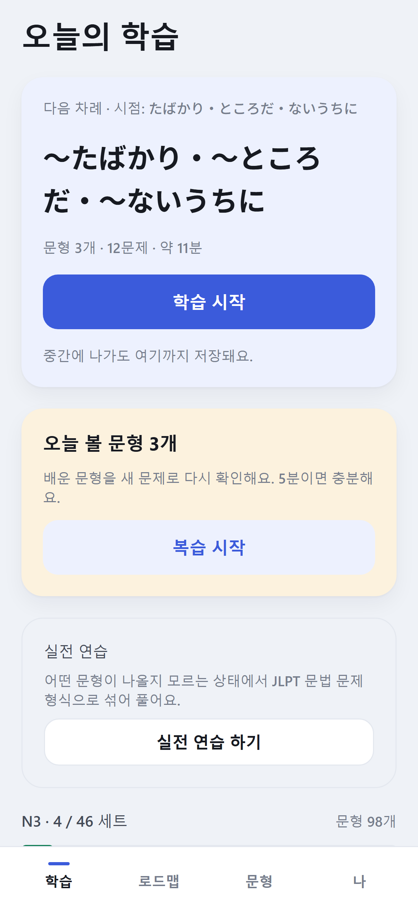
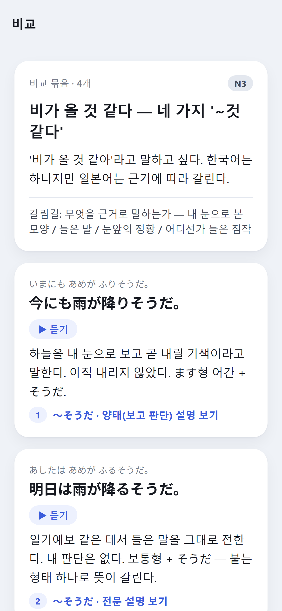
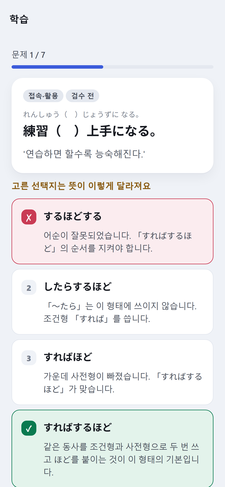
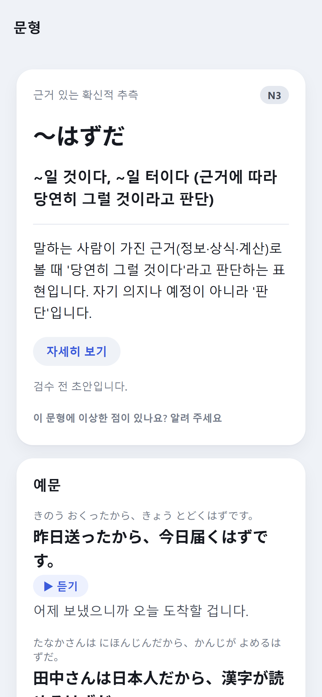
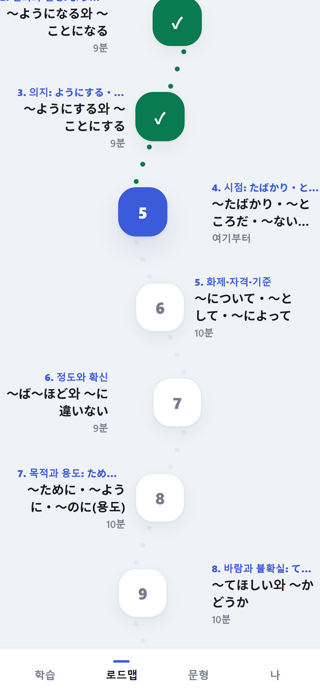
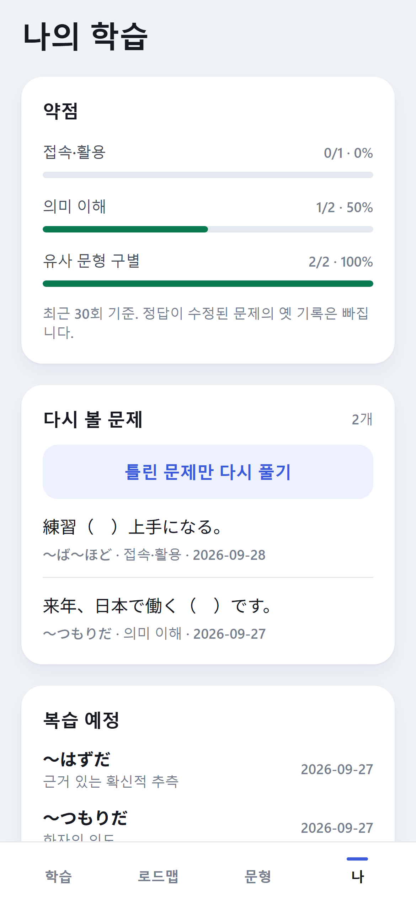

한국어로는 같은데, 일본어에서는 다른 것
한국어 사용자를 위한 일본어 문형 학습 앱
기초부터 N1까지 문형 423개 · 문제 1,563개
번역이 같아지는 자리에서 학습이 막힙니다. KotoSense는 그 갈림길을 한 화면에 놓습니다.
| 降りそうだ | 하늘을 내 눈으로 보고 곧 내릴 기색이라고 말한다 |
| 降るそうだ | 일기예보에서 들은 말을 그대로 전한다 |
| 降るようだ | 젖은 길 같은 눈앞의 근거로 내가 추론한다 |
| 降るらしい | 어디선가 들은 정보로 짐작한다. 한발 물러나 있다 |
| ちょっと待て | 명령형. 거칠고 단호하다. 윗사람에게는 쓰지 않는다 |
| ちょっと待ちなさい | 부모가 아이에게. 위에서 아래로 차분한 지시 |
| ちょっと待ってください | 정중한 부탁. 대부분의 상황에 무난하다 |
| 少々お待ちください | 손님을 높이는 부탁. 가게나 전화 응대 |
실제 앱 화면입니다.

오늘 할 것만 보여 주는 홈

헷갈리는 문형을 나란히

선택지마다 뜻이 어떻게 달라지는지

왜 이 표현인지, 예문은 소리로

기초부터 N1까지 한 줄기 길

약점과 다시 볼 문제
오답을 고르면 "틀렸습니다"가 아니라, 그 선택지를 골랐을 때 문장의 뜻이 어떻게 달라지는지 알려 줍니다.
1·3·7·14·30일 간격으로, 같은 문형을 다른 문제로 묻습니다. 답을 외웠는지 이해했는지 구별합니다.
어떤 문형이 나올지 모르는 상태에서 빈칸 고르기와 ★ 문장 만들기를 섞어 풉니다. 결과는 형식별·기능별로.
시간 제한도, 연속 학습일 압박도 없습니다. 복습 알림은 볼 것이 있는 날에만 하루 한 번.
레벨 편성은 이 앱의 자체 기준이며 공식 JLPT 출제 범위가 아닙니다. 주최 측은 문법 출제 목록을 공개하지 않습니다. 이 앱은 JLPT 문법 학습을 돕는 도구이며 시험 합격을 보장하지 않습니다.
첫 버전의 학습 콘텐츠는 아직 사람 검수를 거치지 않은 초안입니다. 앱 안에서 '검수 전'으로 표시하고 있으며, 이상한 곳을 앱에서 바로 알려 주시면 고쳐서 업데이트합니다.